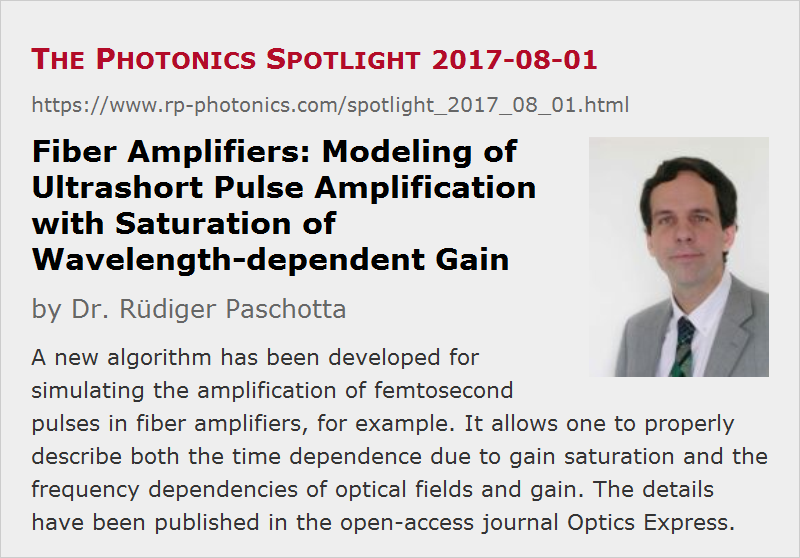

Fiber Amplifiers: Modeling of Ultrashort Pulse Amplification with Saturation of Wavelength-dependent Gain
Posted on 2017-08-01 as a part of the Photonics Spotlight (available as e-mail newsletter!)
Permanent link: https://www.rp-photonics.com/spotlight_2017_08_01.html
Author: Dr. Rüdiger Paschotta, RP Photonics Consulting GmbH
Abstract: A new algorithm has been developed for simulating the amplification of femtosecond pulses in fiber amplifiers, for example. It allows one to properly describe both the time dependence due to gain saturation and the frequency dependencies of optical fields and gain. The details have been published in the open-access journal Optics Express.
Ref.: R. Paschotta, “Modeling of ultrashort pulse amplification with gain saturation”, Opt. Express 25 (16), 19112 (2017)

Numerical models for the laser amplification of ultrashort pulses have been developed over many years. Surprisingly, it seems that for one relatively fundamental issue in this context there has not been a good solution until now. The point is how to simultaneously treat gain saturation and the wavelength dependencies of gain and the optical fields.
The fundamental difficulty is that gain saturation is essentially a time-dependent effect and should thus be described in the time domain, whereas frequency dependencies of course suggest to work in the frequency domain. But how to formulate (not just solve) a differential equation which correctly addresses the time and frequency domain at the same time?
I encountered that problem in the context of the development of our software RP Fiber Power, which since version V4 can simulate the amplification of ultrashort pulses e.g. in fiber amplifiers. In most cases, the problem is not severe because the pulse energies are too low for causing substantial gain saturation. In some chirped-pulse amplifier systems, however, we do see substantial gain saturation (as is necessary for efficient power conversion) in conjunction with a large gain and optical bandwidth. Note that without strongly chirped pulses in the fiber, one cannot have strong gain saturation of femtosecond pulses, since the applicable peak intensities are limited by fiber nonlinearities (in particular by nonlinear self-focusing) so that only relatively long (temporally stretched) pulses can cause substantial gain saturation.
When reviewing the literature, I found that a number of different approaches has been used to address that challenge, but all of them appears to have serious limitations:
- In some cases, one can correctly include both the time dependence through gain saturation and the frequency dependence of the gain, but not the frequency dependence of the gain saturation, since the saturation is described by a purely time-domain equation.
- Others have used a two-dimensional numerical description of pulses based on time–frequency distributions, effectively adapting matters from radiation transfer theory, which however cannot take into account coherent effects. Unfortunately, however, coherent effects can often not be ignored in the context of ultrashort pulses.
- A relatively simple and still accurate approach is possible in the context of chirped-pulse amplifiers, but here one requires quite specific assumptions on the pulses, so that such an algorithm is not well usable for an all-purpose simulation software, for example.
- It is also not practical to use Maxwell–Bloch equations, where one would have to include a lot of microscopic details of the gain medium.
I finally developed a new algorithm which has the following advantages:
- It can fully take into account both the time dependence from gain saturation and the relevant frequency dependencies.
- It is fully compatible with the typically used numerical representation of ultrashort pulses in the time or frequency domain.
- It does not require specific assumptions on the pulses – for example, a quasi-monochromatic nature of small temporal slices of a pulse.
Essentially, the new method requires some “soft” temporal slicing of pulses, where for each slice separately one applies a Fourier transform to get into the frequency domain and apply the frequency-dependent gain there; another Fourier transform leads back to the time domain. In the end, all the slices are properly combined to obtain the amplified pulse in the time domain. Some technical details of the implementation are not straightforward; various technical issues had to be solved in order to obtain an accurate and robust algorithm. That is now used in the RP Fiber Power software.
I decided to publish the details in a scientific paper, which has just appeared in an open-access journal – see the reference given at the beginning of the article. (See also the references therein if you want to learn more about the previously described algorithms.) Although that publication will allow competitors to implement the algorithm themselves, I think it is good that everyone can verify how solid scientific expertise is the basis of our simulation software.
This article is a posting of the Photonics Spotlight, authored by Dr. Rüdiger Paschotta. You may link to this page and cite it, because its location is permanent. See also the RP Photonics Encyclopedia.
Note that you can also receive the articles in the form of a newsletter or with an RSS feed.
Questions and Comments from Users
Here you can submit questions and comments. As far as they get accepted by the author, they will appear above this paragraph together with the author’s answer. The author will decide on acceptance based on certain criteria. Essentially, the issue must be of sufficiently broad interest.
Please do not enter personal data here; we would otherwise delete it soon. (See also our privacy declaration.) If you wish to receive personal feedback or consultancy from the author, please contact him e.g. via e-mail.
By submitting the information, you give your consent to the potential publication of your inputs on our website according to our rules. (If you later retract your consent, we will delete those inputs.) As your inputs are first reviewed by the author, they may be published with some delay.
|  |
If you like this page, please share the link with your friends and colleagues, e.g. via social media:
These sharing buttons are implemented in a privacy-friendly way!